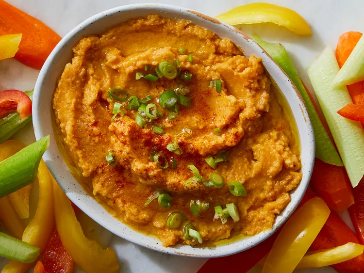

Pumpkin Hummus

Description
Try adding pumpkin puree to hummus for a colorful variety of the Middle Eastern classic. Serve with pita bread and cut-up veggies such as bell pepper strips, carrots, and celery.
Ingredients
- 1 tablespoon olive oil, plus more for garnish
- 2 cloves garlic, minced
- 1 teaspoon cumin
- 1 (15-oz can) chickpeas, rinsed and drained
- 3/4 cup canned pumpkin
- 1/4 cup water
- 1/4 cup lemon juice
- 1/2 teaspoon salt
- 1/8 teaspoon cayenne pepper
- 1/8 teaspoon ground cinnamon
- 1/8 teaspoon freshly ground black pepper
- 1 green onions, sliced for garnish
Steps
- Heat olive oil in a skillet over medium heat. Add garlic and cumin; cook and stir until fragrant, about 30 seconds.
- Transfer garlic mixture to a food processor or blender. Add chickpeas, pumpkin, water, lemon juice, salt, cayenne, cinnamon, and black pepper. Blend until smooth.
- Transfer into a serving bowl. Garnish with additional olive oil and sprinkle with green onions. Serve with pita bread and cut-up veggies.
Return to main page